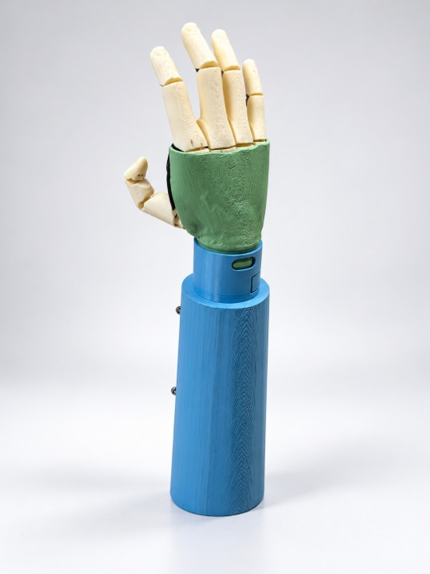
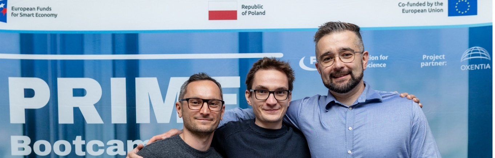

R&D start
Research begins at Warsaw University of Technology.

As light as a passive hand, as functional as an active one.
I am interested in testing75% of children abandon bionic prostheses or choose cosmetic ones. 88% name weight as the main reason. Most bionic hands weigh over 250 g and cost over 100,000 PLN. We are building a hand light enough for a child and priced within reach of public reimbursement.

Warsaw University of Technology · FNP PRIME
Research begins at Warsaw University of Technology.
Functional prototype grip, TRL 3.
Market interviews with clinicians. Two patent applications filed.
MDR-oriented prototype specification, spin-off preparation.
Spin-off. Prototype with standard electrodes and wrist connector.
Clinical acceptability pilot with partner clinics.
Production prototype and EU MDR certification.
Launch through distributors to clinics.
Are you a clinic or prosthetic centre, or a family interested in testing the hand? Leave your email and we will contact you.